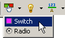
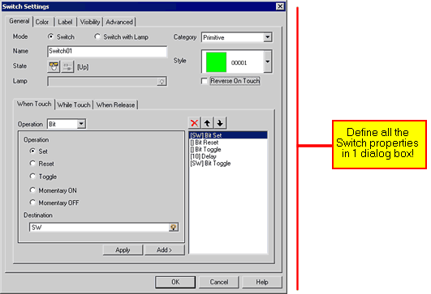

|
|
|
|
|
|
|
|
The Switch tool in the Graphical Objects toolbar can create two types of switches: Switch and Radio Button.

This section describes the Switch. For more information about the Radio Button, see Section 9.2.6.2, Example of Creating a Radio Button.
You can set up a Switch in the Switch Settings dialog box. For more information about each setting, see the cross references in the table below. For procedures on how to create a normal switch, see Section 9.2.6.1, Example of Creating a Switch.

The following table describes each tab in the Switch Settings dialog box and references to more information.
|
Tab |
Settings |
Reference |
|
General Tab |
Select the Switch frame and define the When Touch, While Touch, and When Release operations. |
Section 9.2.1, Switch General Tab |
|
Color Tab |
Defines the colors and images used on the switch. |
Section 9.2.2, Switch Color Tab |
|
Label Tab |
Type the text string labels that will display on the switch. |
Section 9.2.3, Switch Label Tab |
|
Visibility Tab |
Define visibility and blink for the switch. |
Section 9.2.4, Switch Visibility Tab |
|
Advanced Tab |
Set up various advanced operations such as Interlock and Buzzer. |
Section 9.2.5, Switch Advanced Tab |